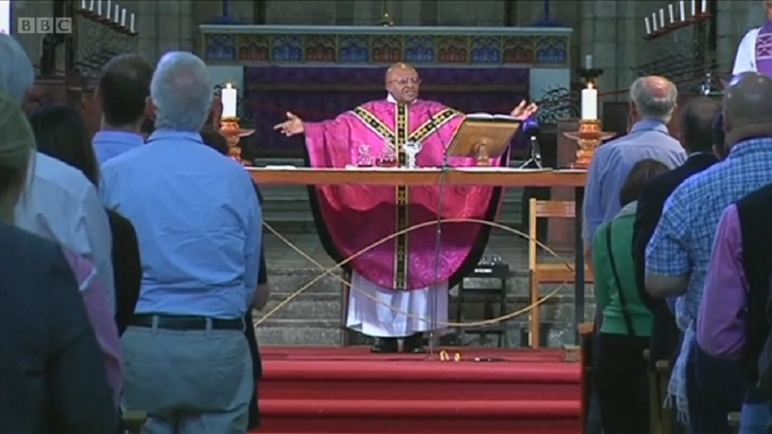

Desmond Tutu: South Africa anti-apartheid hero dies aged 90
Archbishop Desmond Tutu, the Nobel Peace prize laureate who helped end apartheid in South Africa, has died aged 90. President Cyril Ramaphosa said the churchman's death marked "another chapter of bereavement in our nation's farewell to a generation of outstanding South Africans". Archbishop Tutu had helped bequeath "a liberated South Africa," he added. Tutu was one of the country's best known figures at home and abroad. A contemporary of anti-apartheid icon Nelson Mandela, he was was one of the driving forces behind the movement to end the policy of racial segregation and discrimination enforced by the white minority government against the black majority in South Africa from 1948 until 1991. Obituary: South Africa's rebellious priest In pictures: The life of Desmond Tutu He was awarded the Nobel prize in 1984 for his role in the struggle to abolish the apartheid system. Tutu's death comes just weeks after that of South Africa's last apartheid-era president, FW de Clerk, who died at the age of 85.
President Ramaphosa said Tutu was "an iconic spiritual leader, anti-apartheid activist and global human rights campaigner". He described him as "a patriot without equal; a leader of principle and pragmatism who gave meaning to the biblical insight that faith without works is dead. "A man of extraordinary intellect, integrity and invincibility against the forces of apartheid, he was also tender and vulnerable in his compassion for those who had suffered oppression, injustice and violence under apartheid, and oppressed and downtrodden people around the world." The Nelson Mandela Foundation was among those paying tributes, saying Tutu's "contributions to struggles against injustice, locally and globally, are matched only by the depth of his thinking about the making of liberatory futures for human societies. "He was an extraordinary human being. A thinker. A leader. A shepherd." Former US president Barack Obama described him as a mentor and a "moral compass".
Go to The BBC and read more...